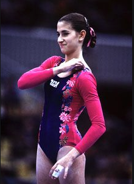

Gina Stallone (USA)
1981 World Championships Team Member

Gina was born on July 26, 1965. She trained at the Parkettes club for the majority of her career. After leaving elite gymnastics, she competed for the University of Florida on a full scholarship. Today, she and her husband Marty Amrich own and operate Stallone Gymnastics in Fleetwood, PA.
Competition Results
1977 1978 1979 1980 1981 1982 This page was created on March 01, 2021 and was last updated on March 12, 2021.
Eastern States Team Championships: 1st Team
MAGDA Championships: 5th AA
Pennsylvania State Championships: 1st AA
1978 AAU JO Nationals: 2nd AA
AAU Mid-Atlantic Junior Olympic Championships: 1st AA, 1st V, 1st UB, 1st B
Pennsylvania State Championships: 1st AA (Junior AA)
USA Jr. National Championships: 5th AA
USA Championships: 19th AA
FRG-USA Dual Meet: 1st Team, 12th AA
International Gymnastics Team Championships: 2nd Team, 6th AA
USA Championships: 11th AA
USA-CHN Dual Meet: 2nd Team, 11th AA
World Championships: 6th Team
World Championship Team Trials: 3rd AA
Albuquerque Journal International Invitational: 2nd AA
American Classic: 1st AA
American Cup: 5th AA
Australia Cup: 5th AA
Caesar's Palace Invitational: 5th AA
International Mixed Pairs: 3rd Team
Parkette Invitational: 2nd AA, 1st B, 3rd FX, 4th UB
Rouen International: 6th AA
USA-USSR Dual Meet: 2nd Team, 11th AA
USA Championships: 4th AA, 5th UB, 6th V, 6th FX
1983
Emerald Empire Cup: 7th AA, 1st FX
Parkette Invitational: 10th AA
US Classic: 4th AA
USA Championships: 11th AA
USA-USSR Dual Meet: 2nd Team, 11th AA
World Championship Team Trials: 19th AA
1984
Albuquerque Journal Invitational: 8th AA
American Classsic: 16th AA
US Classic: 2nd AA
© Gymn Forum